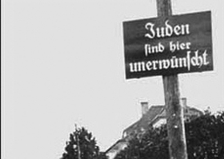
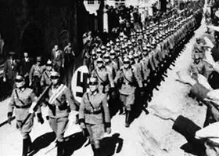
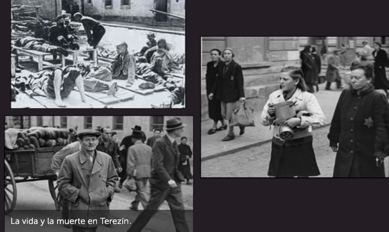
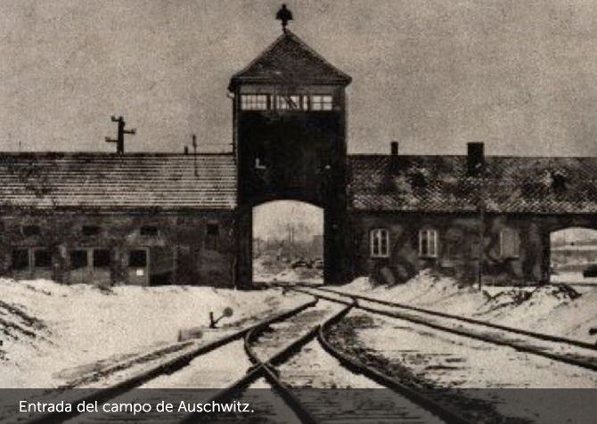

Hana Brady nació el 16 de mayo de 1931 en Nove Mesto, Checoslovaquia.
Su padre Karel, tenía un almacén, le gustaba el fútbol, el esquí, la gimnasia y era actor amateur. Era además bombero voluntario.
Su madre Marketa, era una anfitriona cálida y generosa que recibía en su casa a los necesitados y preparaba paquetes de comida y ropa para distribuir en el pueblo.
George, su hermano mayor, tocaba el violín y Hana tocaba el piano.
Hana y George iban a la escuela pública.
Amaban patinar y jugar en la nieve.
Una vez a la semana Hana y George estudiaban sobre la historia y las festividades judías.
El 15 de marzo de 1939 las tropas nazis marcharon sobre toda Checoslovaquia y la vida de la familia Brady cambió para siempre.


Hana y George juegan en su patio.
Cada día aparecían nuevas prohibiciones y restricciones para los judíos.
No podían ir al cine, no podían jugar en la plaza ni en los parques, tenían prohibido ir al gimnasio y a patinar en el lago.
También se les prohibió ir a la escuela y los amigos que al principio prometieron continuar visitándolos, lentamente dejaron de hacerlo ya que sus padres se lo prohibían.
Hana y George sentían que su mundo se volvía cada vez más pequeño. Estaban enojados, tristes y frustrados.
En 1941 Marketa y Karel fueron arrestados y los niños vieron a sus padres por última vez.
Quedaron solos y pasaron a vivir escondidos con un tío que era cristiano hasta que el 14 de mayo de 1942 fueron citados para ser deportados al campo de Terezín.

Terezín era un gueto y campo de concentración. Cuando Hana y George llegaron fueron separados y allí permanecieron durante casi dos años.
Fotos de Terezín.
Dibujo de Hana.
Por el campo de Terezín pasaron más de 15.000 niños.
Hana dormía en un edificio de diez habitaciones. En cada una de ellas dormían veinte niñas sobre colchones de arpillera rellenos de paja.
Nunca había suficiente espacio, ni suficiente comida, ni la oportunidad de un momento privado. Estaba lleno de personas, infinidad de insectos y ratas y una gran cantidad de nazis que patrullaban el campo imponiendo una disciplina cruel.
Con George lograron encontrarse una vez por semana a escondidas.
Además del trabajo diario que todos debían hacer, se dictaban clases secretas en el sótano del edificio.
Hana dibujaba.

Deportación hacia Auschwitz.
Cuantas más personas llegaban a Terezín, otras tantas salían. Hombres y mujeres eran apiñados en vagones de carga y enviados al Este, hacia un destino desconocido. Los rumores de brutalidad y asesinatos en masa empezaron a circular abiertamente. Cuando las personas hablaban de ello, Hana se tapaba los oídos. En setiembre de 1944, deportaron a George y cuatro semanas después le tocó el turno a Hana. El tren viajó durante un día y una noche. No había ni comida ni agua, no había baños. Su garganta estaba reseca, le dolían los huesos y tenía punzadas en el estómago.
El 23 de octubre de 1944 llegaron a Auschwitz.
A través de un portón de hierro y bajo la mirada vigilante de perros atemorizantes y hombres uniformados, Hana y sus compañeras marcharon.
Recibieron la orden de entrar en un edificio.
La puerta se cerró detrás de ellas con gran violencia.
Muchos años después, Fumiko Ishioka, Coordinadora del Museo del Holocausto en Tokio, recibió una maleta marrón procedente de Auschwitz con la inscripción: "Hana Brady - 16 de mayo de 1931 - Waisekind (huérfano)". A partir de allí comenzó una profunda investigación, gracias a la cual hoy conocemos la historia de Hana. Hana fue asesinada en Auschwitz. Su hermano George sobrevivió y emigró a Toronto, Canadá.